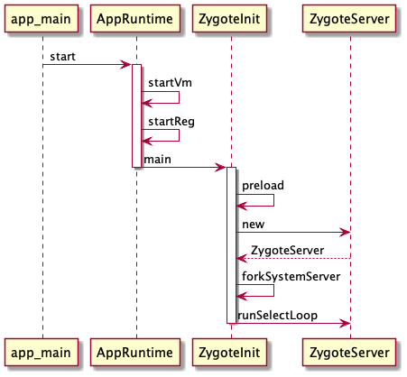

Zygote
Contents
前言
Zygote 是 Android 中所有 App 的父进程，有着举足轻重的地位。了解了 Zygote 可以让你对系统如何工作有更深入的了解，今天来学习一下 Zygote 的知识。
本文基于 Android10
app_main
做 Android 的都知道，它是基于 Linux 的，所以在内核启动之后的第一个进程是 init ，而 init 的进程会通过解析 init.rc 来创建一系列进程，比如本文要讲的 Zygote ，我们来看一下 init.zygote.rc 的内容。
源码中许多 init.zygotexxx.rc ，我们就挑一个 init.zygote64.rc 来看
/system/core/rootdir/init.zygote64.rc
service zygote /system/bin/app_process64 -Xzygote /system/bin --zygote --start-system-server
class main
priority -20
user root
group root readproc reserved_disk
socket zygote stream 660 root system
socket usap_pool_primary stream 660 root system
onrestart write /sys/android_power/request_state wake
onrestart write /sys/power/state on
onrestart restart audioserver
onrestart restart cameraserver
onrestart restart media
onrestart restart netd
onrestart restart wificond
writepid /dev/cpuset/foreground/tasks
从上面的代码中我们可以知道 zygote 的执行文件路径在 /system/bin/app_process64 。
而 app_process64 由 /frameworks/base/cmds/app_process/app_main.cpp 编译而来，所以我们要到这里去看看。这里还要注意的是携带了 --zygote 和 --start-system-server 参数
/frameworks/base/cmds/app_process/app_main.cpp
int main(int argc, char* const argv[])
{
AppRuntime runtime(argv[0], computeArgBlockSize(argc, argv));
argc--;
argv++;
const char* spaced_commands[] = { "-cp", "-classpath" };
bool known_command = false;
// ...
bool zygote = false;
bool startSystemServer = false;
bool application = false;
String8 niceName;
String8 className;
++i;
// 遍历参数，给对应的变量赋值
while (i < argc) {
const char* arg = argv[i++];
if (strcmp(arg, "--zygote") == 0) {
zygote = true;
// 这里是 zygote64
niceName = ZYGOTE_NICE_NAME;
} else if (strcmp(arg, "--start-system-server") == 0) { // 判断有没有 --start-system-server
startSystemServer = true;
} else if (strcmp(arg, "--application") == 0) {
application = true;
} else if (strncmp(arg, "--nice-name=", 12) == 0) {
niceName.setTo(arg + 12);
} else if (strncmp(arg, "--", 2) != 0) {
className.setTo(arg);
break;
} else {
--i;
break;
}
}
// ...
if (!niceName.isEmpty()) {
// 把进程名换为 zygote
runtime.setArgv0(niceName.string(), true /* setProcName */);
}
if (zygote) {
// 调用 AppRuntime.start
runtime.start("com.android.internal.os.ZygoteInit", args, zygote);
} else if (className) {
runtime.start("com.android.internal.os.RuntimeInit", args, zygote);
} else {
fprintf(stderr, "Error: no class name or --zygote supplied.\n");
app_usage();
LOG_ALWAYS_FATAL("app_process: no class name or --zygote supplied.");
}
}
main 方法比较简单，主要是解析启动参数，创建 AppRuntime 对象，并且最后会调用 AppRuntime.start 方法，之后的事情都交给 AppRuntime 了。
AppRuntime.start
AppRuntime 继承自 AndroidRuntime ， start 方法位于 AndroidRuntime 中。
/frameworks/base/core/jni/AndroidRuntime.cpp
void AndroidRuntime::start(const char* className, const Vector<String8>& options, bool zygote)
{
static const String8 startSystemServer("start-system-server");
for (size_t i = 0; i < options.size(); ++i) {
if (options[i] == startSystemServer) {
const int LOG_BOOT_PROGRESS_START = 3000;
}
}
const char* rootDir = getenv("ANDROID_ROOT");
if (rootDir == NULL) {
rootDir = "/system";
if (!hasDir("/system")) {
return;
}
setenv("ANDROID_ROOT", rootDir, 1);
}
JniInvocation jni_invocation;
jni_invocation.Init(NULL);
JNIEnv* env;
// 创建虚拟机
if (startVm(&mJavaVM, &env, zygote) != 0) {
return;
}
onVmCreated(env);
// 注册 JNI 方法
if (startReg(env) < 0) {
return;
}
jclass stringClass;
jobjectArray strArray;
jstring classNameStr;
stringClass = env->FindClass("java/lang/String");
strArray = env->NewObjectArray(options.size() + 1, stringClass, NULL);
classNameStr = env->NewStringUTF(className);
strArray[0] = "com.android.internal.os.ZygoteInit"
env->SetObjectArrayElement(strArray, 0, classNameStr);
for (size_t i = 0; i < options.size(); ++i) {
jstring optionsStr = env->NewStringUTF(options.itemAt(i).string());
assert(optionsStr != NULL);
env->SetObjectArrayElement(strArray, i + 1, optionsStr);
}
// className 是通过参数传递进来的，根据上一小节，我们知道是 com.android.internal.os.ZygoteInit
// 在这里会被转换成 com/android/internal/os/ZygoteInit
char* slashClassName = toSlashClassName(className != NULL ? className : "");
// 通过类名找到 class
jclass startClass = env->FindClass(slashClassName);
if (startClass == NULL) {
ALOGE("JavaVM unable to locate class '%s'\n", slashClassName);
} else {
// 通过 JNI 查找 main 方法
jmethodID startMeth = env->GetStaticMethodID(startClass, "main",
"([Ljava/lang/String;)V");
if (startMeth == NULL) {
ALOGE("JavaVM unable to find main() in '%s'\n", className);
} else {
// 调用 ZygoteInit.main 方法，进入 Java 世界
env->CallStaticVoidMethod(startClass, startMeth, strArray);
}
}
free(slashClassName);
if (mJavaVM->DetachCurrentThread() != JNI_OK)
ALOGW("Warning: unable to detach main thread\n");
if (mJavaVM->DestroyJavaVM() != 0)
ALOGW("Warning: VM did not shut down cleanly\n");
}
这里做的事情就比较多了
- 调用
startVm创建虚拟机 - 调用
startReg注册JNI方法 - 通过
JNI调用ZygoteInit.main进入Java世界
startVm
/frameworks/base/core/jni/AndroidRuntime.cpp
int AndroidRuntime::startVm(JavaVM** pJavaVM, JNIEnv** pEnv, bool zygote)
{
// ...
// 设置虚拟机启动参数
parseRuntimeOption("dalvik.vm.heapstartsize", heapstartsizeOptsBuf, "-Xms", "4m");
parseRuntimeOption("dalvik.vm.heapsize", heapsizeOptsBuf, "-Xmx", "16m");
// 预加载一些类，提高性能
if (!hasFile("/system/etc/preloaded-classes")) {
ALOGE("Missing preloaded-classes file, /system/etc/preloaded-classes not found: %s\n",
strerror(errno));
return -1;
}
parseRuntimeOption("dalvik.vm.method-trace-file", methodTraceFileBuf, "-Xmethod-trace-file:");
// 创建虚拟机
if (JNI_CreateJavaVM(pJavaVM, pEnv, &initArgs) < 0) {
ALOGE("JNI_CreateJavaVM failed\n");
return -1;
}
return 0;
}
在 startVm 中主要是设置虚拟机的参数，然后调用 JNI_CreateJavaVM 创建虚拟机。
startReg
/frameworks/base/core/jni/AndroidRuntime.cpp
int AndroidRuntime::startReg(JNIEnv* env)
{
// 设置线程创建方法
androidSetCreateThreadFunc((android_create_thread_fn) javaCreateThreadEtc);
env->PushLocalFrame(200);
// 注册 JNI 函数
if (register_jni_procs(gRegJNI, NELEM(gRegJNI), env) < 0) {
env->PopLocalFrame(NULL);
return -1;
}
env->PopLocalFrame(NULL);
return 0;
}
androidSetCreateThreadFunc
/system/core/libutils/Threads.cpp
void androidSetCreateThreadFunc(android_create_thread_fn func)
{
gCreateThreadFn = func;
}
仅仅是赋值，在线程启动的时候会调用。
register_jni_procs
/frameworks/base/core/jni/AndroidRuntime.cpp
#define REG_JNI(name) { name }
struct RegJNIRec {
int (*mProc)(JNIEnv*);
};
static const RegJNIRec gRegJNI[] = {
REG_JNI(register_com_android_internal_os_RuntimeInit),
REG_JNI(register_com_android_internal_os_ZygoteInit_nativeZygoteInit),
// ... 此处省略 100 多行
};
static int register_jni_procs(const RegJNIRec array[], size_t count, JNIEnv* env)
{
// 遍历 array, 调用 mProc 方法
for (size_t i = 0; i < count; i++) {
if (array[i].mProc(env) < 0) {
return -1;
}
}
return 0;
}
array 在这里是 gRegJNI ，里面的都经过宏替换，以第一个元素为例
REG_JNI(register_com_android_internal_os_RuntimeInit) 替换后会成为 RegJNIRec 类型，也就是把函数赋值给了 mProc 这个函数指针。
然后调用 Proc ，也就是调用 register_com_android_internal_os_RuntimeInit 方法。
其方法定义如下，所以这里其实也就是使用动态注册 JNI 函数
int register_com_android_internal_os_RuntimeInit(JNIEnv* env)
{
const JNINativeMethod methods[] = {
{ "nativeFinishInit", "()V",
(void*) com_android_internal_os_RuntimeInit_nativeFinishInit },
{ "nativeSetExitWithoutCleanup", "(Z)V",
(void*) com_android_internal_os_RuntimeInit_nativeSetExitWithoutCleanup },
};
return jniRegisterNativeMethods(env, "com/android/internal/os/RuntimeInit",
methods, NELEM(methods));
}
ZygoteInit.main
在 AndroidRuntime.start() 最后部分，使用 JNI 调用了 ZygoteInit.main 方法，从此进入了 Java 世界
/frameworks/base/core/java/com/android/internal/os/ZygoteInit.java
public static void main(String argv[]) {
ZygoteServer zygoteServer = null;
ZygoteHooks.startZygoteNoThreadCreation();
try {
Os.setpgid(0, 0);
} catch (ErrnoException ex) {
throw new RuntimeException("Failed to setpgid(0,0)", ex);
}
Runnable caller;
try {
// ...
RuntimeInit.enableDdms();
boolean startSystemServer = false;
String zygoteSocketName = "zygote";
String abiList = null;
boolean enableLazyPreload = false;
for (int i = 1; i < argv.length; i++) {
if ("start-system-server".equals(argv[i])) {
startSystemServer = true;
} else if ("--enable-lazy-preload".equals(argv[i])) {
enableLazyPreload = true;
} else if (argv[i].startsWith(ABI_LIST_ARG)) {
abiList = argv[i].substring(ABI_LIST_ARG.length());
} else if (argv[i].startsWith(SOCKET_NAME_ARG)) {
zygoteSocketName = argv[i].substring(SOCKET_NAME_ARG.length());
} else {
throw new RuntimeException("Unknown command line argument: " + argv[i]);
}
}
final boolean isPrimaryZygote = zygoteSocketName.equals(Zygote.PRIMARY_SOCKET_NAME);
if (!enableLazyPreload) {
// 预加载类和资源
preload(bootTimingsTraceLog);
} else {
Zygote.resetNicePriority();
}
// 通过 Socket 方式创建 ZygoteServer
zygoteServer = new ZygoteServer(isPrimaryZygote);
if (startSystemServer) {
// 创建 SystemServer 进程
Runnable r = forkSystemServer(abiList, zygoteSocketName, zygoteServer);
if (r != null) {
r.run();
return;
}
}
Log.i(TAG, "Accepting command socket connections");
// 进入循环
caller = zygoteServer.runSelectLoop(abiList);
} catch (Throwable ex) {
Log.e(TAG, "System zygote died with exception", ex);
throw ex;
} finally {
if (zygoteServer != null) {
zygoteServer.closeServerSocket();
}
}
if (caller != null) {
caller.run();
}
}
ZygoteInit.main 方法中主要做了以下四件事
- 调用
preload预加载一些资源，如Drawable、Color等 - 创建
ZygoteServer对象 - 创建
SystemServer进程 - 调用
ZygoteServer.runSelectLoop等待AMS的创建应用的请求。
preload
/frameworks/base/core/java/com/android/internal/os/ZygoteInit.java
static void preload(TimingsTraceLog bootTimingsTraceLog) {
// 加载 /system/etc/preloaded-classes 中的类
preloadClasses();
// 加载资源，包含Drawable 和 Color 资源
preloadResources();
// 加载显卡驱动
maybePreloadGraphicsDriver();
// 加载共享库，包含 android compiler_rt jnigraphics
preloadSharedLibraries();
// 加载文本资源
preloadTextResources();
WebViewFactory.prepareWebViewInZygote();
warmUpJcaProviders();
sPreloadComplete = true;
}
在 preload 中会提前加载一些资源，这样以后通过 fork 创建进程的时候，就可以继承下来，不用再去加载，可以提高性能。
fork 使用的 Copy-On-wirte 的技术，所以子进程拥有和父进程一样的内容。
ZygoteServer
/frameworks/base/core/java/com/android/internal/os/ZygoteServer.java
ZygoteServer(boolean isPrimaryZygote) {
mUsapPoolEventFD = Zygote.getUsapPoolEventFD();
if (isPrimaryZygote) {
// PRIMARY_SOCKET_NAME="zygote"
mZygoteSocket = Zygote.createManagedSocketFromInitSocket(Zygote.PRIMARY_SOCKET_NAME);
mUsapPoolSocket =
Zygote.createManagedSocketFromInitSocket(
Zygote.USAP_POOL_PRIMARY_SOCKET_NAME);
} else {
// 逻辑同上
}
fetchUsapPoolPolicyProps();
mUsapPoolSupported = true;
}
调用了 createManagedSocketFromInitSocket 看来，主要的逻辑在这个方法中，跟进去看看。
createManagedSocketFromInitSocket
/frameworks/base/core/java/com/android/internal/os/Zygote.java
static LocalServerSocket createManagedSocketFromInitSocket(String socketName) {
int fileDesc;
final String fullSocketName = ANDROID_SOCKET_PREFIX + socketName;
try {
String env = System.getenv(fullSocketName);
fileDesc = Integer.parseInt(env);
} catch (RuntimeException ex) {
throw new RuntimeException("Socket unset or invalid: " + fullSocketName, ex);
}
try {
// 创建文件描述符，并用它创建 LocalServerSocket
FileDescriptor fd = new FileDescriptor();
fd.setInt$(fileDesc);
return new LocalServerSocket(fd);
} catch (IOException ex) {
throw new RuntimeException(
"Error building socket from file descriptor: " + fileDesc, ex);
}
}
在这里创建了一个文件描述符，并用这个描述符作为参数创建了 LocalServerSocket 对象，这里 Zygote 就可以作为服务端，等待 AMS 连接，并发送创建应用程序的请求了。不过这里还没有真的开始等待，只是创建好了服务端。
forkSystemServer
/frameworks/base/core/java/com/android/internal/os/ZygoteInit.java
private static Runnable forkSystemServer(String abiList, String socketName,
ZygoteServer zygoteServer) {
long capabilities = posixCapabilitiesAsBits(
OsConstants.CAP_IPC_LOCK,
OsConstants.CAP_KILL,
OsConstants.CAP_NET_ADMIN,
OsConstants.CAP_NET_BIND_SERVICE,
OsConstants.CAP_NET_BROADCAST,
OsConstants.CAP_NET_RAW,
OsConstants.CAP_SYS_MODULE,
OsConstants.CAP_SYS_NICE,
OsConstants.CAP_SYS_PTRACE,
OsConstants.CAP_SYS_TIME,
OsConstants.CAP_SYS_TTY_CONFIG,
OsConstants.CAP_WAKE_ALARM,
OsConstants.CAP_BLOCK_SUSPEND
);
StructCapUserHeader header = new StructCapUserHeader(
OsConstants._LINUX_CAPABILITY_VERSION_3, 0);
StructCapUserData[] data;
try {
data = Os.capget(header);
} catch (ErrnoException ex) {
throw new RuntimeException("Failed to capget()", ex);
}
capabilities &= ((long) data[0].effective) | (((long) data[1].effective) << 32);
String args[] = {
"--setuid=1000",
"--setgid=1000",
"--setgroups=1001,1002,1003,1004,1005,1006,1007,1008,1009,1010,1018,1021,1023,"
+ "1024,1032,1065,3001,3002,3003,3006,3007,3009,3010",
"--capabilities=" + capabilities + "," + capabilities,
"--nice-name=system_server",
"--runtime-args",
"--target-sdk-version=" + VMRuntime.SDK_VERSION_CUR_DEVELOPMENT,
"com.android.server.SystemServer",
};
ZygoteArguments parsedArgs = null;
int pid;
try {
parsedArgs = new ZygoteArguments(args);
Zygote.applyDebuggerSystemProperty(parsedArgs);
Zygote.applyInvokeWithSystemProperty(parsedArgs);
boolean profileSystemServer = SystemProperties.getBoolean(
"dalvik.vm.profilesystemserver", false);
if (profileSystemServer) {
parsedArgs.mRuntimeFlags |= Zygote.PROFILE_SYSTEM_SERVER;
}
// fork 子进程，uid=1000,gid=1000, 进程名=system_server
pid = Zygote.forkSystemServer(
parsedArgs.mUid, parsedArgs.mGid,
parsedArgs.mGids,
parsedArgs.mRuntimeFlags,
null,
parsedArgs.mPermittedCapabilities,
parsedArgs.mEffectiveCapabilities);
} catch (IllegalArgumentException ex) {
throw new RuntimeException(ex);
}
// 0 表示子进程
if (pid == 0) {
// 关闭从 Zygote 继承下来的 ServerSocket，因为用不到
zygoteServer.closeServerSocket();
return handleSystemServerProcess(parsedArgs);
}
return null;
}
在这个方法中调用了 forkSystemServer 创建了 system_server 子进程，然后交给了 handleSystemServerProcess 从此便进入 system_server 的业务逻辑了。
runSelectLoop
/frameworks/base/core/java/com/android/internal/os/ZygoteServer.java
Runnable runSelectLoop(String abiList) {
ArrayList<FileDescriptor> socketFDs = new ArrayList<FileDescriptor>();
ArrayList<ZygoteConnection> peers = new ArrayList<ZygoteConnection>();
socketFDs.add(mZygoteSocket.getFileDescriptor());
peers.add(null);
while (true) {
fetchUsapPoolPolicyPropsWithMinInterval();
int[] usapPipeFDs = null;
StructPollfd[] pollFDs = null;
int pollIndex = 0;
for (FileDescriptor socketFD : socketFDs) {
pollFDs[pollIndex] = new StructPollfd();
pollFDs[pollIndex].fd = socketFD;
pollFDs[pollIndex].events = (short) POLLIN;
++pollIndex;
}
final int usapPoolEventFDIndex = pollIndex;
// ...
try {
// 使用 poll 查询 pollFds 中的事件，如果没有事件则会阻塞
Os.poll(pollFDs, -1);
} catch (ErrnoException ex) {
throw new RuntimeException("poll failed", ex);
}
boolean usapPoolFDRead = false;
while (--pollIndex >= 0) {
if ((pollFDs[pollIndex].revents & POLLIN) == 0) {
continue;
}
if (pollIndex == 0) {
// pollIndex 为 0 表示的是 LocalServerSocket, 这时候是有连接请求了
ZygoteConnection newPeer = acceptCommandPeer(abiList);
// 加入 peers
peers.add(newPeer);
socketFDs.add(newPeer.getFileDescriptor());
} else if (pollIndex < usapPoolEventFDIndex) { // 不是0，就是别人发送数据过来了
try {
ZygoteConnection connection = peers.get(pollIndex);
// 处理 client 发来的数据
final Runnable command = connection.processOneCommand(this);
if (mIsForkChild) {
return command;
} else {
// ...
}
} catch (Exception e) {
// ...
}
} else {
//...
}
}
// ...
}
}
runSelectLoop 分两步，
- 调用
acceptCommandPeer等待client发起连接的请求，收到请求后创建ZygoteConnection并放入peers，等待client发送数据过来 - 取出有发送数据过来的
ZygoteConnection，调用processOneCommand处理请求。
acceptCommandPeer
/frameworks/base/core/java/com/android/internal/os/ZygoteServer.java
private ZygoteConnection acceptCommandPeer(String abiList) {
try {
return createNewConnection(mZygoteSocket.accept(), abiList);
} catch (IOException ex) {
throw new RuntimeException(
"IOException during accept()", ex);
}
}
protected ZygoteConnection createNewConnection(LocalSocket socket, String abiList)
throws IOException {
return new ZygoteConnection(socket, abiList);
}
acceptCommandPeer 等待 client 发起请求，收到后创建 ZygoteConnection 。
processOneCommand
/frameworks/base/core/java/com/android/internal/os/ZygoteConnection.java
Runnable processOneCommand(ZygoteServer zygoteServer) {
String args[];
ZygoteArguments parsedArgs = null;
FileDescriptor[] descriptors;
try {
// 读取参数
args = Zygote.readArgumentList(mSocketReader);
descriptors = mSocket.getAncillaryFileDescriptors();
} catch (IOException ex) {
throw new IllegalStateException("IOException on command socket", ex);
}
int pid = -1;
FileDescriptor childPipeFd = null;
FileDescriptor serverPipeFd = null;
// 解析参数
parsedArgs = new ZygoteArguments(args);
// fork 子进程
pid = Zygote.forkAndSpecialize(parsedArgs.mUid, parsedArgs.mGid, parsedArgs.mGids,
parsedArgs.mRuntimeFlags, rlimits, parsedArgs.mMountExternal, parsedArgs.mSeInfo,
parsedArgs.mNiceName, fdsToClose, fdsToIgnore, parsedArgs.mStartChildZygote,
parsedArgs.mInstructionSet, parsedArgs.mAppDataDir, parsedArgs.mTargetSdkVersion);
try {
if (pid == 0) {
zygoteServer.setForkChild();
// 子进程中用不到 ServerSocket ，所以需要关闭
zygoteServer.closeServerSocket();
IoUtils.closeQuietly(serverPipeFd);
serverPipeFd = null;
// 进入子进程处理
return handleChildProc(parsedArgs, descriptors, childPipeFd,
parsedArgs.mStartChildZygote);
} else {
IoUtils.closeQuietly(childPipeFd);
childPipeFd = null;
handleParentProc(pid, descriptors, serverPipeFd);
return null;
}
} finally {
IoUtils.closeQuietly(childPipeFd);
IoUtils.closeQuietly(serverPipeFd);
}
}
processOneCommand 中先读取了 client 发送过来的数据，解析成 ZygoteArguments ，然后调用 Zygote.forkAndSpecialize 创建应用程序进程。
然后在子进程中关闭了 ZygoteServer ，因为普通 App 用不到。
紧接着调用 handleChildProc 进入子进程的业务逻辑，通常就是我们自己写的 App 了。
总结
画个时序图来整体上看一下都做了啥

参考
- 《深入理解Android(卷I)》
- Android系统启动-zygote篇 - Gityuan博客 | 袁辉辉的技术博客